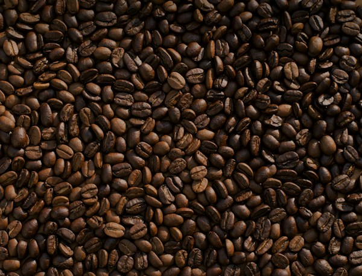

CAFÉ / COTAÇÕES DIÁRIAS
Histórico de cotações do café.
Histórico de mercado da Cocatrel

Carregando o histórico de cotações...
Última cotação
----Variação no período
----Mínima no período
----Máxima no período
----MOVIMENTO DO MERCADO
Evolução dos preços
Nenhuma cotação disponível
Selecione outro período ou classificação.
REGISTROS DIÁRIOS
Cotações recentes
| Data | Classificação | Preço | Preço com ICMS |
|---|